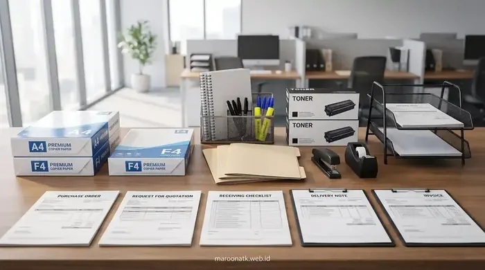

Prosedur Pengadaan ATK Kantor Instansi Pemerintah yang Akuntabel dan Transparan
Pengadaan ATK kantor instansi pemerintah adalah rangkaian proses pemenuhan barang operasional habis pakai yang wajib mematuhi ketentuan pengadaan LKPP, prinsip efisiensi anggaran, dan transparansi belanja barang publik. Alur pelaksanaannya mencakup identifikasi kebutuhan riil, verifikasi legalitas penyedia berbadan hukum PT, penerbitan Surat Pesanan/SPK resmi, pemeriksaan fisik barang, hingga penerbitan Berita Acara Serah Terima (BAST) dan e-Faktur PPN 11% yang siap diaudit.
Pengelolaan belanja operasional barang habis pakai seperti kertas HVS, toner printer, binder ordner, dan alat tulis di lingkungan kementerian, lembaga pemerintah non-kementerian (LPNK), dinas pemerintah daerah, serta Badan Usaha Milik Negara (BUMN) memiliki dampak langsung terhadap kelancaran pelayanan birokrasi harian. Meskipun nominal per item relatif kecil, volume belanja tahunan alat tulis kantor memiliki nilai kumulatif yang signifikan dalam postur anggaran belanja barang.
Kerapian dokumentasi dan kepatuhan terhadap mekanisme pengadaan barang/jasa pemerintah menjadi kunci utama bagi Pejabat Pembuat Komitmen (PPK) dan Pejabat Pengadaan untuk menghindari potensi temuan administratif saat audit internal (Inspektorat/APIP) maupun audit eksternal (BPK RI). Memilih mitra penyedia berlegalitas resmi seperti Tentang Maroon ATK memastikan seluruh tahapan administratif dan distribusi fisik barang berjalan lancar sesuai regulasi yang berlaku.

Panduan Memilih Supplier ATK Kantor Jakarta Terpercaya Berlegalitas
Checklist verifikasi legalitas PT, kelengkapan NPWP, PKP, dan transparansi invoice dalam memilih mitra pengadaan ATK.
Tahap Identifikasi Kebutuhan dan Penyusunan Spesifikasi Teknis ATK
Transparansi pengadaan berakar dari perencanaan yang akurat. Tahapan awal yang wajib dilakukan satuan kerja meliputi:
- Analisis Konsumsi Riil (Moving Average): Menghitung rata-rata pemakaian bulanan berdasarkan data pengeluaran gudang semester sebelumnya untuk mencegah penumpukan stok mati (overstock) atau kekosongan barang (stockout).
- Standarisasi Spesifikasi Teknis yang Terbuka: Menentukan gramatur kertas (misal HVS 75/80 gsm berstandar ISO), tipe tinta/toner (Original OEM), serta dimensi binder arsip tanpa mengarah pada merek tunggal secara diskriminatif, kecuali terdapat justifikasi kebutuhan kompatibilitas perangkat yang sah.
- Penyusunan Rencana Anggaran Biaya (RAB) / HPS: Melakukan survei harga pasar wajar dari minimal 3 sumber penyedia resmi atau referensi katalog belanja elektronik resmi pemerintah.
Mekanisme Pemilihan Penyedia dan Ekosistem Pengadaan Pemerintah
Sesuai dengan ketentuan tata kelola pengadaan barang/jasa pemerintah yang berlaku, satuan kerja dapat memanfaatkan berbagai mekanisme pengadaan:
- E-Purchasing melalui Katalog Elektronik (E-Katalog): Menjadi metode prioritas untuk komoditas barang standar yang telah terdaftar dalam sistem katalog LKPP, memberikan transparansi harga dan kemudahan audit jejak digital.
- Pengadaan Langsung (Direct Procurement): Diterapkan untuk kebutuhan mendesak atau paket bernilai tertentu sesuai batasan regulasi yang berlaku, dengan tetap mewajibkan perbandingan harga, SPH resmi, dan verifikasi kualifikasi penyedia.
- Sistem Paket Terintegrasi: Menggunakan skema pengadaan ATK kantor terpadu untuk menyederhanakan administrasi faktur dan memangkas biaya kirim logistik satuan.
Matriks 13 Tahapan Prosedur & Dokumen Kontrol Pengadaan ATK Pemerintah
Berikut adalah tabel matriks tata kelola pengadaan barang habis pakai, kelengkapan dokumen output, tujuan akuntabilitas, serta mitigasi risiko pemeriksaannya:
| Tahap Pengadaan | Dokumen Utama | Tujuan Akuntabilitas | Risiko Jika Tidak Lengkap | Kontrol Procurement |
|---|---|---|---|---|
| 1. Identifikasi Kebutuhan | Formulir Kebutuhan Barang Unit (PR) | Menghitung kuantitas riil operasional | Pembelian berlebih / stok barang rusak di gudang | Verifikasi data stok fisik gudang |
| 2. Spesifikasi Teknis | Kerangka Acuan Kerja (KAK) / TOR | Standarisasi mutu kertas & alat tulis | Menerima kertas tipis/macet di mesin fotokopi | Pencantuman standar gramatur & ukuran |
| 3. Penyusunan Anggaran | RAB & Dokumen HPS | Estimasi pagu harga pasar yang wajar | Kemahalan harga (mark-up) saat audit | Survei harga dari minimal 3 distributor resmi |
| 4. Pemilihan Penyedia | Surat Permintaan Penawaran (RFQ) | Menjaring vendor berkapabilitas legal | Bermitra dengan vendor fiktif/perantara | Cek keabsahan NIB & NPWP perusahaan |
| 5. Evaluasi Administrasi | Lembar Verifikasi Legalitas PT/CV | Memastikan kepatuhan hukum penyedia | Penyedia tidak taat pajak (non-PKP) | Validasi status PKP & Konfirmasi Status Wajib Pajak |
| 6. Evaluasi Teknis | Lembar Scoring Kesesuaian Barang | Mencocokkan brosur/sampel vs KAK | Barang yang dikirim tidak sesuai tipe | Pengujian sampel tinta/kertas fisik |
| 7. Evaluasi Harga | Berita Acara Evaluasi Harga (BAEH) | Memperoleh harga terbaik include PPN | Timbul biaya pengiriman tersembunyi | Harga penawaran mengikat sampai ke gudang |
| 8. Pemesanan / Kontrak | Surat Pesanan (SP) / SPK Resmi | Ikatan perjanjian hukum hak & kewajiban | Wanprestasi keterlambatan pasok | Klausul sanksi denda keterlambatan harian |
| 9. Pengiriman Barang | Surat Jalan Resmi Berkoli | Bukti perpindahan logistik vendor | Barang tercecer atau basah saat transit | Pengecekan kemasan karton utuh bersegel |
| 10. Pemeriksaan Barang | Berita Acara Hasil Pemeriksaan (BAHP) | Pemeriksaan mutu & kuantitas fisik | Menerima barang rusak tanpa retur | Uji petik hitung jumlah rim & expired date |
| 11. Serah Terima (BAST) | Berita Acara Serah Terima (BAST) | Pengalihan kepemilikan aset resmi | Sengketa pembayaran belum tuntas | Tanda tangan basah / digital PPK & Direktur Vendor |
| 12. Dokumen Pembayaran | Kuitansi, Invoice & e-Faktur PPN 11% | Penerbitan Surat Perintah Membayar (SPM) | Faktur pajak tidak valid / temuan pajak | Verifikasi barcode e-Faktur pada server DJP |
| 13. Arsip Dokumen Audit | Berkas Bundel Lengkap (Hard & Softcopy) | Kesiapan pemeriksaan BPK / APIP | Catatan temuan ketertiban administrasi | Pemberkasan kronologis dalam filing cabinet |

Pemeriksaan fisik barang secara cermat saat proses loading dock bersama tim Pejabat Pengadaan menjamin kesesuaian jumlah rim kertas dan kelayakan segel sebelum BAST ditandatangani.

Spesifikasi dan Kelebihan Paket Pengadaan Alat Tulis Kantor Bulanan B2B
Perbandingan tingkatan paket ATK Starter hingga Corporate untuk efisiensi pengadaan bulanan.
Verifikasi Legalitas Badan Hukum dan Kepatuhan Pajak Penyedia
Penyedia barang yang memenuhi kualifikasi pengadaan pemerintah wajib memiliki profil akuntabel:
- Badan Usaha Resmi: Berbentuk Perseroan Terbatas (PT) dengan akta pengesahan Kemenkumham dan NIB aktif.
- Kepatuhan Perpajakan: Menerbitkan e-Faktur PPN 11% yang sah dengan nomor seri faktur pajak terdaftar di DJP, serta bebas tunggakan pajak.
- Rekening Bank Perusahaan: Seluruh pembayaran melalui SP2D wajib ditransfer langsung ke rekening giro atas nama badan hukum perusahaan, bukan rekening pribadi.

Cara Menghitung Kebutuhan ATK Kantor Bulanan Secara Akurat
Rumus praktis menghitung konsumsi ATK, safety stock, dan lead time supplier untuk purchasing.
Checklist Praktis Transparansi Pengadaan ATK bagi Pejabat Pengadaan
Sebelum mencairkan pembayaran anggaran pengadaan ATK, pastikan checklist kepatuhan berikut telah terpenuhi 100%:
- Surat Permintaan Kebutuhan (PR) dari unit kerja terarsip lengkap dengan rincian peruntukan.
- Harga satuan pada Surat Pesanan tidak melebihi pagu Rencana Kerja dan Anggaran (RKA/DIPA).
- Barang fisik telah diperiksa kuantitas dan tanggal kedaluwarsa (misal tinta printer).
- Berita Acara Hasil Pemeriksaan (BAHP) dan BAST ditandatangani kedua belah pihak di atas meterai yang cukup.
- Kuitansi bermeterai, invoice resmi berkop vendor, dan e-Faktur PPN 11% telah diverifikasi keabsahannya.
Mitra Terpercaya Pengadaan ATK Instansi Pemerintah & BUMN
Layanan Paket ATK Lengkap, SPH Terinci & Faktur Pajak Resmi
Maroon ATK siap mendukung pemenuhan barang operasional kantor instansi pemerintah dengan transparansi harga, kepatuhan administrasi BAST, dan pengiriman aman terjamin.
Kesimpulan: Mewujudkan Tata Kelola Pengadaan ATK yang Bersih dan Akuntabel
Rangkuman Keputusan Procurement
Menjalankan prosedur pengadaan ATK instansi pemerintah sesuai tata kelola yang benar melindungi pengelola anggaran dari risiko audit dan memastikan operasional birokrasi berjalan tanpa hambatan.
- Tertib Administrasi 13 Tahap: Jalankan seluruh proses mulai dari identifikasi kebutuhan riil hingga pengarsipan berkas BAST secara disiplin.
- Mitigasi Risiko Audit: Pastikan seluruh faktur pajak PPN 11% valid dan spesifikasi barang sesuai KAK kontrak.
- Bermitra dengan Vendor Legal: Pilih Maroon ATK sebagai mitra pengadaan berbadan hukum PT resmi dengan jaminan suplai stabil dan akuntabilitas prima.
Pertanyaan Umum (FAQ) Pengadaan ATK Instansi Pemerintah
BAST merupakan bukti sah formal bahwa barang telah diterima dalam kondisi 100% baik dan sesuai dengan spesifikasi teknis pada SPK/Surat Pesanan. Dokumen ini menjadi dasar mutlak bagi bendahara pengeluaran untuk memproses pembayaran (SPM/SP2D) serta menjadi dokumen uji petik utama saat audit kepatuhan oleh Inspektorat maupun BPK.
Penyedia wajib memiliki legalitas badan hukum resmi (PT/CV), Nomor Induk Berusaha (NIB) dengan KBLI perdagangan ATK yang sesuai, NPWP berstatus Pengusaha Kena Pajak (PKP), Surat Keterangan Fiskal (SKF) aktif, kemampuan menerbitkan e-Faktur PPN 11% yang sah di server DJP, serta rekening bank atas nama perusahaan.
Maroon ATK menyediakan layanan pasok paket ATK lengkap berkop PT resmi, dukungan Surat Penawaran Harga (SPH) terinci, kepatuhan perpajakan e-Faktur PPN 11%, pengiriman tepat waktu dengan armada logistik terdedikasi, serta jaminan penggantian barang cacat secara instan sebelum penandatanganan BAST.

Arby Ardiansyah
Praktisi pengadaan B2B berpengalaman lebih dari 5 tahun dalam manajemen rantai pasok alat tulis kantor, tata kelola pengadaan barang pemerintah, dan e-procurement instansi di Indonesia.